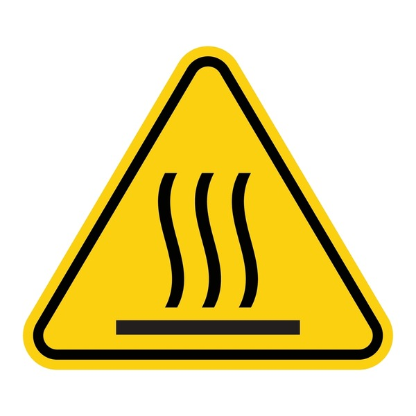

InfraScope
System interface for monitoring simulated infrastructure, data streams, and stored events in real time.
SYSTEM INTERFACE [FEED]
Select a mode to inspect different infrastructure signals
>>> SYSTEM STANDBY
[SYSTEM] Interface initialized. Awaiting operator input.
[UPDATE] Click anywhere on screen to view glyph.
[SIGNAL] No active data streams.
[ACTION] Press "MODE" to begin inspection >>
>>> ACTIVE SYSTEMS
[SYSTEM] Monitoring active infrastructure nodes in real time.
[SIGNAL] Latency and status shift dynamically under simulated load conditions.
[ACTION] Identify anomalies, degradation patterns, and failure states.
>>> STORAGE LAYER
[SYSTEM] Client-side persistence layer initialized.
[SIGNAL] Notes are written to and retrieved from local storage.
[ACTION] Record observations, anomalies, and manual system logs.
>>> EVENT FEED
[SYSTEM] Event stream capturing live system activity.
[SIGNAL] Logs generated from system transitions and user interaction.
[SELF-AWARENESS] This is crucial for survival....don't hurt yourself
